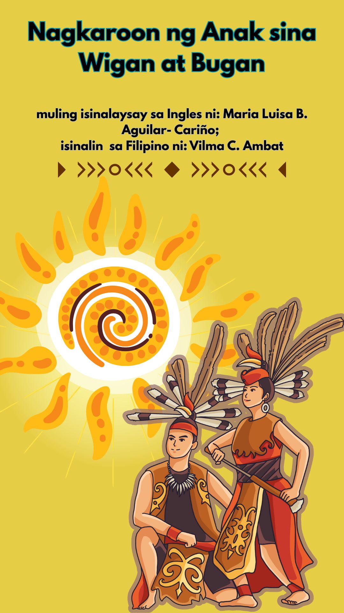
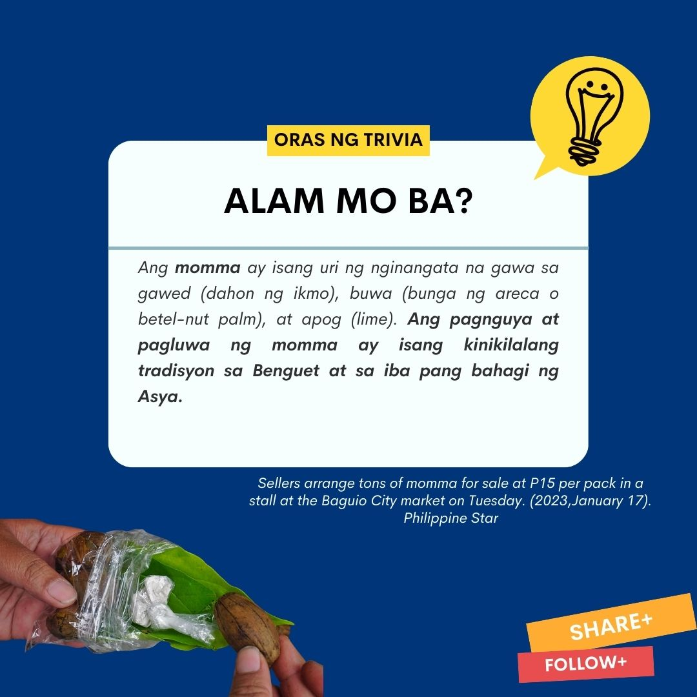
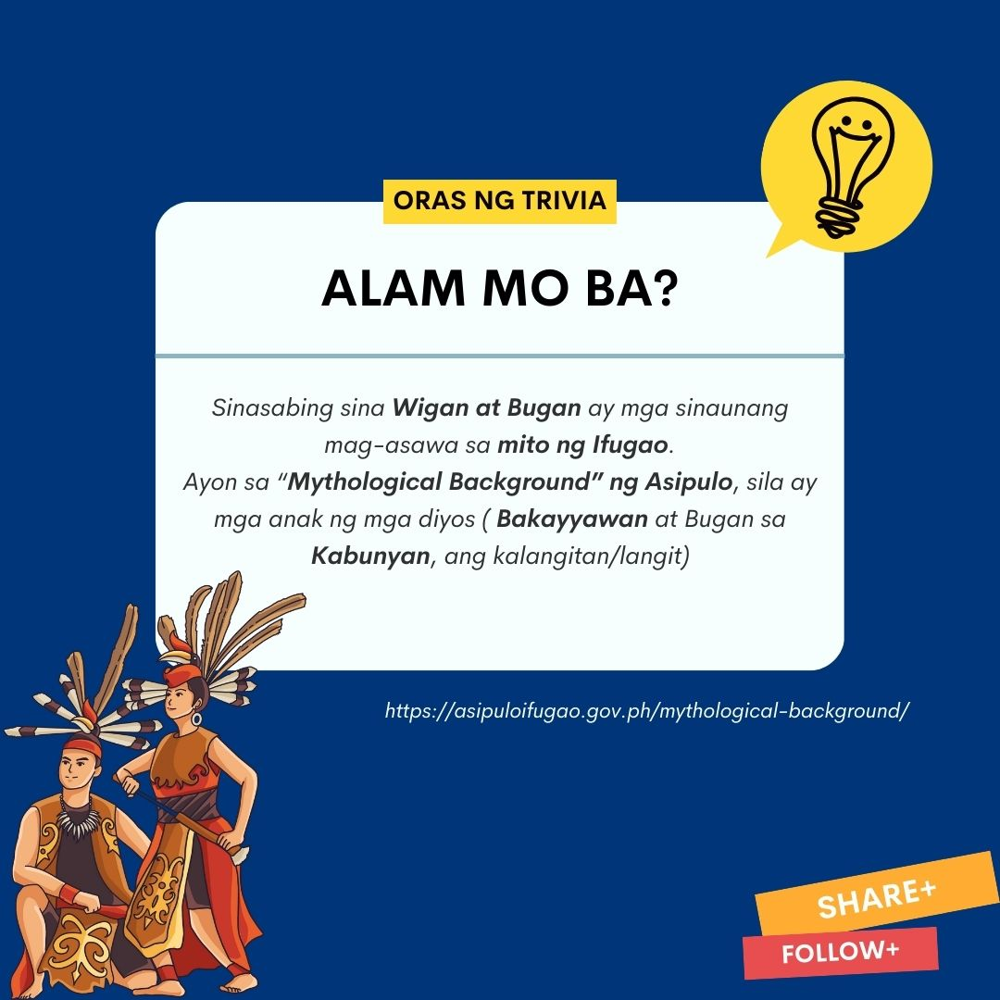
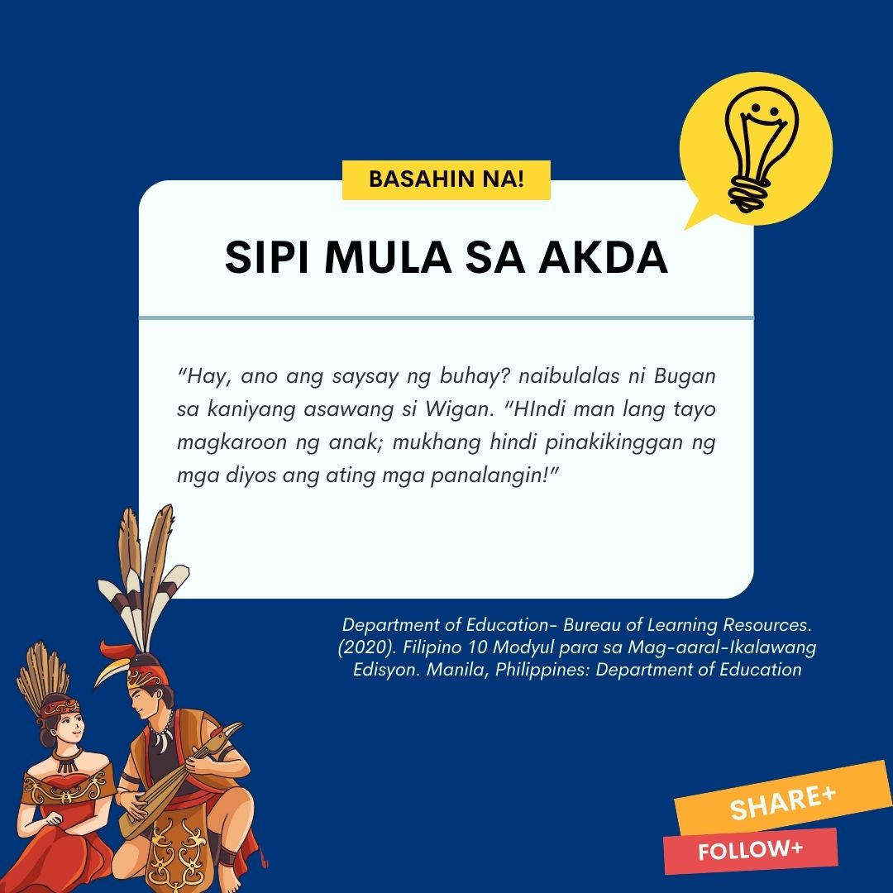
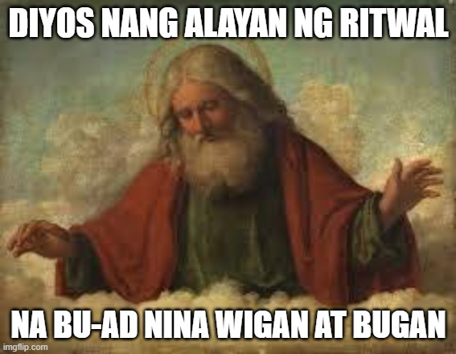
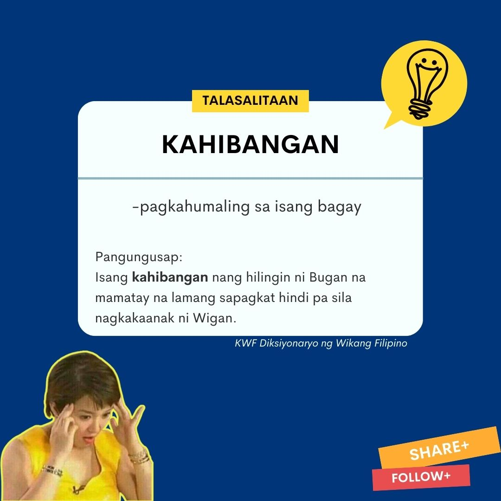
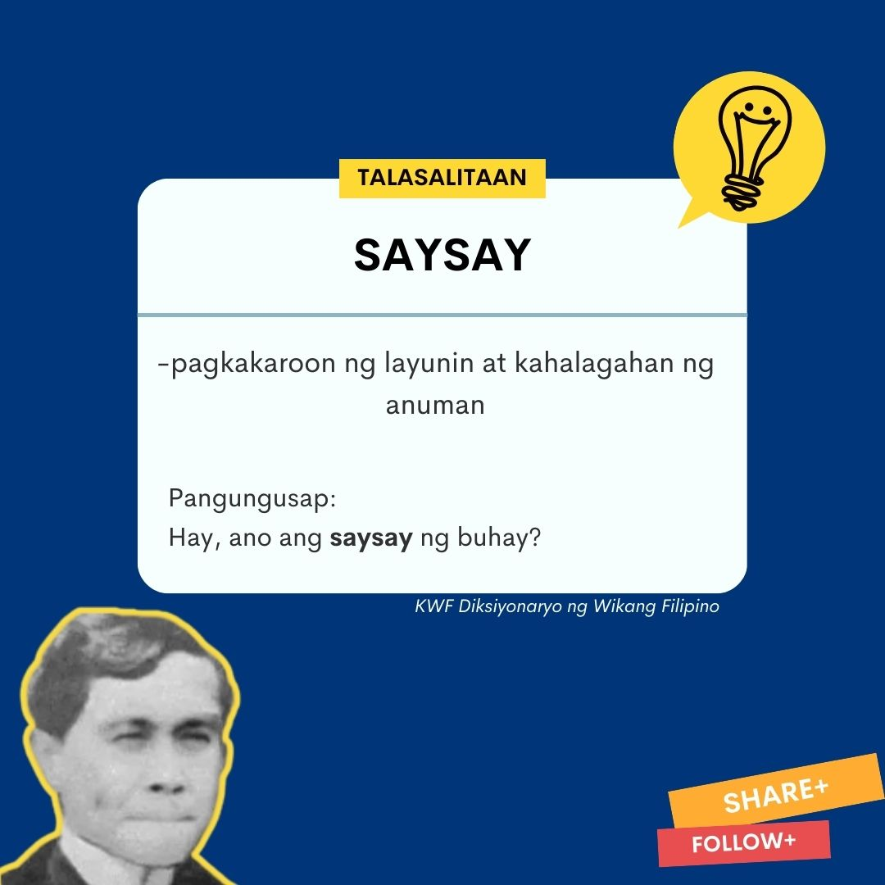
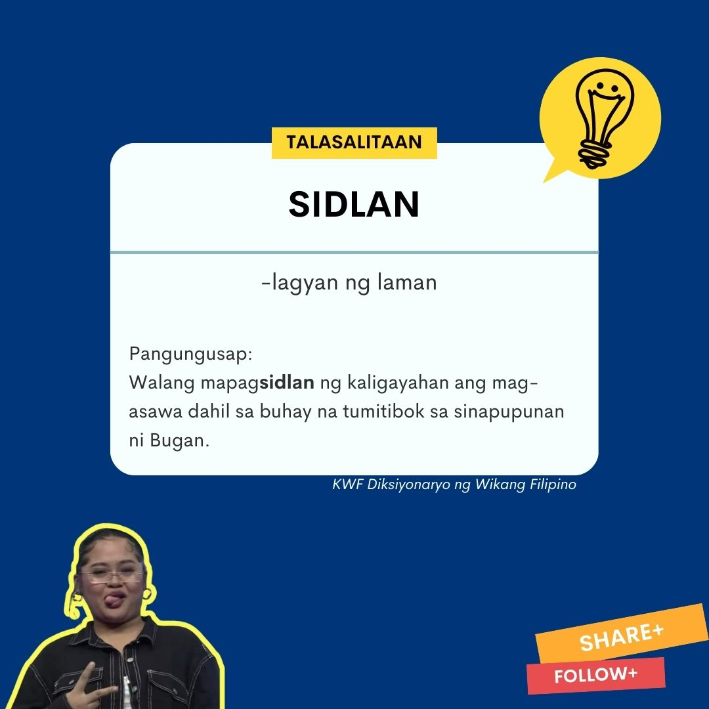

Sanggunian - 2020 "Department of Education- Bureau of Learning Resources. Filipino 10 Modyul para sa Mag-aaral-Ikalawang Edisyon. Manila, Philippines: Department of Education
Nagkaroon ng Anak sina Wigan at Bugan
(muling isinalaysay sa Ingles ni: Maria Luisa B. Aguilar- Cariño; isinalin ni: Vilma C. Ambat)
“Hay, ano ang saysay ng buhay?” naibulalas ni Bugan sa kaniyang asawang si Wigan. “Hindi man lang tayo magkaroon ng anak; mukhang hindi pinakikinggan ng mga diyos ang ating mga panalangin!”
Sumang-ayon naman si Wigan, “Oo, tama ka! Pero halika muna, mag-momma tayo at saka natin isipin kung ano ang dapat nating gawin.”
Matagal na nag-isip ang mag-asawa hanggang nakapagdesisyon si Bugan na magtungo sa tahanan ng mga diyos sa Silangan. “Dito ka lang, Wigan, pupuntahan ko ang mga diyos na sina Ngilin, Bumabakker, Bolang at ang diyos ng mga hayop.”
Sinimulan ni Bugan ang kaniyang paglalakbay. Pumunta siya sa Ibyong, dumaan sa Poitan, nagtungo siya sa Silangan papuntang Nahbah Baninan. Tumawid siya sa ilog ng Kinakin at narating niya ang lawa sa Ayangan. Nakakita siya ng igat sa lawa. Tinanong siya nito “Saan ka pupunta Bugan?” sumagot si Bugan, “Pupunta ako ng Silangan para maghanap ng lalamon sa akin, sapagkat hindi kami magkakaroon ng anak ni Wigan.” Tumawa ang igat. “Huwag kang malungkot, Bugan wika nito. “Sige magtungo ka sa Silangan at makipagkita ka sa mga diyos.”
Ipinagpatuloy ni Bugan ang kaniyang paglalakbay patungo sa lugar ng mga diyos. Narating niya ang lawa sa Lagud. Nakita niya roon ang isang buwaya. “Tao, bakit ka naririto?” pag-uusisa ng buwaya. “Ako si Bugan ng Kiyangan at naghahanap ako ng lalamon sa akin. Wala kaming anak ng aking asawa,” sagot ni Bugan. Humikab ang buwaya at nagsabing, “Hindi kita maaaring kainin sapagkat napakaganda mo.” Ipinagpatuloy muli ni Bugan ang kaniyang paglalakbay at nakarating sa tahanan ng kinatatakutang pating. Nilabanan niya ang pangangatog ng kaniyang tuhod. Hinarap niya ang pating at nagwika, “Pakiusap, kainin mo na ako.” Kaming mag-asawa ay walang anak. Ayaw ko nang mabuhay pa kung hindi ako magkakaroon ng anak.” Sumagot ang pating , “Isang malaking kahihiyan kapag kinain kita . Napakaganda mo. Halika muna sa aking tahanan at kumain;bago mo ipagpatuloy ang iyong paglalakbay.” Pagkatapos saluhan ang pating sa hapag-kainan, muling naglakad patungong Silangan si Bugan. Sa wakas, narating niya ang tahanan ng mga diyos na sina Ngilin, Bumabakker, at iba pang mga diyos. Labis siyang napagod kaya humiga siya sa lusong na nasa labas ng bahay. Doon hinintay ang mga diyos. Labis siyang napagod kaya humiga siya sa lusong na nasa labas ng bahay. Doon hinintay ang mga diyos. Lingid sa kaniyang kaalaman, nasa loob lamang ng bahay si Bumabakker.
“May naaamoy akong tao,” sabi ni Bumabakker. Lumabas siya ng bahay upang hanapin ang pinanggagalingan ng amoy. Nakita niya ang isang magandang babae na nakaupo sa kaniyang lusong. “Anong ginagawa mo rito, Bugan?” tanong niya habang kinikilala kung si Bugan nga iyon.
“Naku, nagpunta ako rito upang mamatay, sapagkat hindi pa rin kami nagkakaroon ng anak ni Wigan pagkalipas ng ilang taon,” wika ni Bugan.
“Kahibangan,” wika ni Bumabakker habang tumatawa. “Halika, hanapin natin si Ngilin at kung nasaan pa ang iba,” wika ni Bumabakker.
Nalugod ang mga diyos na makita si Bugan. Nagbigay sila ng regalong baboy, manok at kalabaw. “ Sasama kami sa iyo pabalik sa Kiyangan. Doon ka naming tuturuan ng ritwal na Bu-ad upang mabiyayaan ka ng mga anak, masaganang ani at pamumuhay.”Inihatid ng mga diyos si Bugan kay Wigan. Tinuruan nila ang mag-asawa ng panalanging dapat nilang sambitin sa pagsasagawa ng ritwal na Bu-ad. Isinagawa ni Wigan at Bugan ang ritwal at pinasalamatan ang kanilang mga diyos. Pagkalipas ng ilang buwan, walang mapagsidlan ng kaligayahan ang mag-asawa dahil sa buhay na tumitibok sa sinapupunan ni Bugan.






